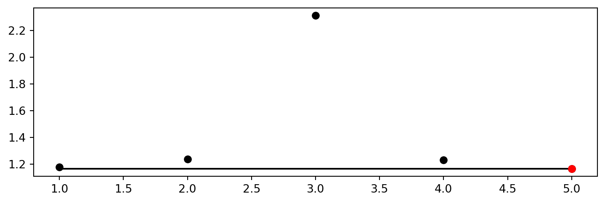
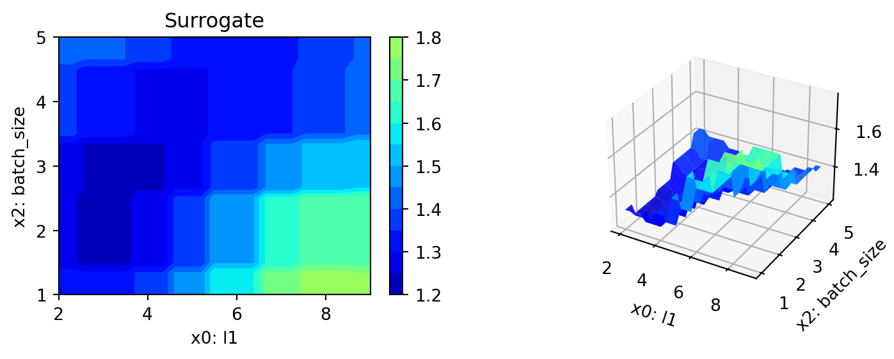
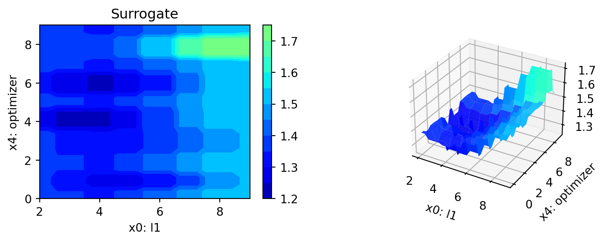
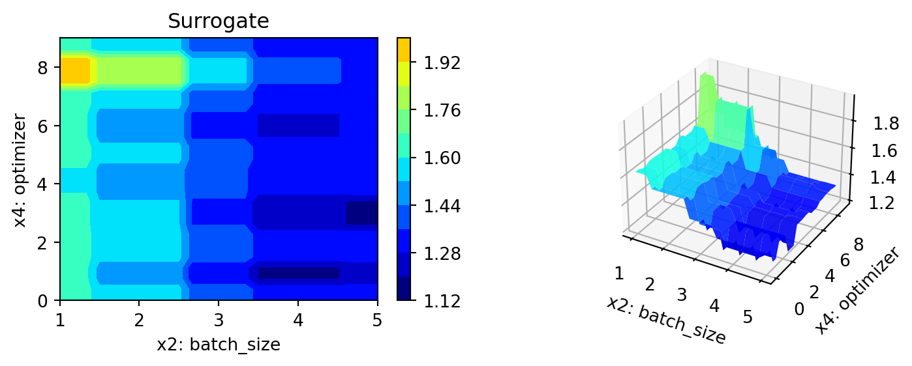

MAX_TIME = 1
INIT_SIZE = 5
DEVICE = None # "cpu" # "cuda:0"13 Hyperparameter Tuning for PyTorch With spotPython
In this tutorial, we will show how spotPython can be integrated into the PyTorch training workflow. It is based on the tutorial “Hyperparameter Tuning with Ray Tune” from the PyTorch documentation (PyTorch 2023a), which is an extension of the tutorial “Training a Classifier” (PyTorch 2023b) for training a CIFAR10 image classifier.
This document refers to the following software versions:
python: 3.10.10torch: 2.0.1torchvision: 0.15.0spotPython: 0.2.29
spotPython can be installed via pip1.
!pip install spotPythonResults that refer to the Ray Tune package are taken from https://PyTorch.org/tutorials/beginner/hyperparameter_tuning_tutorial.html2.
13.1 Setup
Before we consider the detailed experimental setup, we select the parameters that affect run time, initial design size and the device that is used.
from spotPython.utils.device import getDevice
DEVICE = getDevice(DEVICE)
print(DEVICE)mps14-torch_bartz09_1min_5init_2023-06-15_04-27-1813.2 Initialization of the fun_control Dictionary
spotPython uses a Python dictionary for storing the information required for the hyperparameter tuning process. This dictionary is called fun_control and is initialized with the function fun_control_init. The function fun_control_init returns a skeleton dictionary. The dictionary is filled with the required information for the hyperparameter tuning process. It stores the hyperparameter tuning settings, e.g., the deep learning network architecture that should be tuned, the classification (or regression) problem, and the data that is used for the tuning. The dictionary is used as an input for the SPOT function.
from spotPython.utils.init import fun_control_init
fun_control = fun_control_init(task="classification",
tensorboard_path="runs/14_spot_ray_hpt_torch_cifar10",
device=DEVICE,)13.3 Data Loading
The data loading process is implemented in the same manner as described in the Section “Data loaders” in PyTorch (2023a). The data loaders are wrapped into the function load_data_cifar10 which is identical to the function load_data in PyTorch (2023a). A global data directory is used, which allows sharing the data directory between different trials. The method load_data_cifar10 is part of the spotPython package and can be imported from spotPython.data.torchdata.
In the following step, the test and train data are added to the dictionary fun_control.
from spotPython.data.torchdata import load_data_cifar10
train, test = load_data_cifar10()
n_samples = len(train)
# add the dataset to the fun_control
fun_control.update({
"train": train,
"test": test,
"n_samples": n_samples})Files already downloaded and verifiedFiles already downloaded and verified13.4 The Model (Algorithm) to be Tuned
13.4.1 Specification of the Preprocessing Model
After the training and test data are specified and added to the fun_control dictionary, spotPython allows the specification of a data preprocessing pipeline, e.g., for the scaling of the data or for the one-hot encoding of categorical variables. The preprocessing model is called prep_model (“preparation” or pre-processing) and includes steps that are not subject to the hyperparameter tuning process. The preprocessing model is specified in the fun_control dictionary. The preprocessing model can be implemented as a sklearn pipeline. The following code shows a typical preprocessing pipeline:
categorical_columns = ["cities", "colors"]
one_hot_encoder = OneHotEncoder(handle_unknown="ignore",
sparse_output=False)
prep_model = ColumnTransformer(
transformers=[
("categorical", one_hot_encoder, categorical_columns),
],
remainder=StandardScaler(),
)Because the Ray Tune (ray[tune]) hyperparameter tuning as described in PyTorch (2023a) does not use a preprocessing model, the preprocessing model is set to None here.
prep_model = None
fun_control.update({"prep_model": prep_model})13.4.2 Select algorithm and core_model_hyper_dict
The same neural network model as implemented in the section “Configurable neural network” of the PyTorch tutorial (PyTorch 2023a) is used here. We will show the implementation from PyTorch (2023a) in Section 13.4.2.1 first, before the extended implementation with spotPython is shown in Section 13.4.2.2.
13.4.2.1 Implementing a Configurable Neural Network With Ray Tune
We used the same hyperparameters that are implemented as configurable in the PyTorch tutorial. We specify the layer sizes, namely l1 and l2, of the fully connected layers:
class Net(nn.Module):
def __init__(self, l1=120, l2=84):
super(Net, self).__init__()
self.conv1 = nn.Conv2d(3, 6, 5)
self.pool = nn.MaxPool2d(2, 2)
self.conv2 = nn.Conv2d(6, 16, 5)
self.fc1 = nn.Linear(16 * 5 * 5, l1)
self.fc2 = nn.Linear(l1, l2)
self.fc3 = nn.Linear(l2, 10)
def forward(self, x):
x = self.pool(F.relu(self.conv1(x)))
x = self.pool(F.relu(self.conv2(x)))
x = x.view(-1, 16 * 5 * 5)
x = F.relu(self.fc1(x))
x = F.relu(self.fc2(x))
x = self.fc3(x)
return x
The learning rate, i.e., lr, of the optimizer is made configurable, too:
optimizer = optim.SGD(net.parameters(), lr=config["lr"], momentum=0.9)13.4.2.2 Implementing a Configurable Neural Network With spotPython
spotPython implements a class which is similar to the class described in the PyTorch tutorial. The class is called Net_CIFAR10 and is implemented in the file netcifar10.py.
from torch import nn
import torch.nn.functional as F
import spotPython.torch.netcore as netcore
class Net_CIFAR10(netcore.Net_Core):
def __init__(self, l1, l2, lr_mult, batch_size, epochs, k_folds, patience,
optimizer, sgd_momentum):
super(Net_CIFAR10, self).__init__(
lr_mult=lr_mult,
batch_size=batch_size,
epochs=epochs,
k_folds=k_folds,
patience=patience,
optimizer=optimizer,
sgd_momentum=sgd_momentum,
)
self.conv1 = nn.Conv2d(3, 6, 5)
self.pool = nn.MaxPool2d(2, 2)
self.conv2 = nn.Conv2d(6, 16, 5)
self.fc1 = nn.Linear(16 * 5 * 5, l1)
self.fc2 = nn.Linear(l1, l2)
self.fc3 = nn.Linear(l2, 10)
def forward(self, x):
x = self.pool(F.relu(self.conv1(x)))
x = self.pool(F.relu(self.conv2(x)))
x = x.view(-1, 16 * 5 * 5)
x = F.relu(self.fc1(x))
x = F.relu(self.fc2(x))
x = self.fc3(x)
return x13.4.3 The Net_Core class
Net_CIFAR10 inherits from the class Net_Core which is implemented in the file netcore.py. It implements the additional attributes that are common to all neural network models. The Net_Core class is implemented in the file netcore.py. It implements hyperparameters as attributes, that are not used by the core_model, e.g.:
- optimizer (
optimizer), - learning rate (
lr), - batch size (
batch_size), - epochs (
epochs), - k_folds (
k_folds), and - early stopping criterion “patience” (
patience).
Users can add further attributes to the class. The class Net_Core is shown below.
from torch import nn
class Net_Core(nn.Module):
def __init__(self, lr_mult, batch_size, epochs, k_folds, patience,
optimizer, sgd_momentum):
super(Net_Core, self).__init__()
self.lr_mult = lr_mult
self.batch_size = batch_size
self.epochs = epochs
self.k_folds = k_folds
self.patience = patience
self.optimizer = optimizer
self.sgd_momentum = sgd_momentum13.4.4 Comparison of the Approach Described in the PyTorch Tutorial With spotPython
Comparing the class Net from the PyTorch tutorial and the class Net_CIFAR10 from spotPython, we see that the class Net_CIFAR10 has additional attributes and does not inherit from nn directly. It adds an additional class, Net_core, that takes care of additional attributes that are common to all neural network models, e.g., the learning rate multiplier lr_mult or the batch size batch_size.
spotPython’s core_model implements an instance of the Net_CIFAR10 class. In addition to the basic neural network model, the core_model can use these additional attributes. spotPython provides methods for handling these additional attributes to guarantee 100% compatibility with the PyTorch classes. The method add_core_model_to_fun_control adds the hyperparameters and additional attributes to the fun_control dictionary. The method is shown below.
from spotPython.torch.netcifar10 import Net_CIFAR10
from spotPython.data.torch_hyper_dict import TorchHyperDict
from spotPython.hyperparameters.values import add_core_model_to_fun_control
core_model = Net_CIFAR10
fun_control = add_core_model_to_fun_control(core_model=core_model,
fun_control=fun_control,
hyper_dict=TorchHyperDict,
filename=None)13.5 The Search Space: Hyperparameters
In Section 13.5.1, we first describe how to configure the search space with ray[tune] (as shown in PyTorch (2023a)) and then how to configure the search space with spotPython in Section 13.5.2.
13.5.1 Configuring the Search Space With Ray Tune
Ray Tune’s search space can be configured as follows (PyTorch 2023a):
config = {
"l1": tune.sample_from(lambda _: 2**np.random.randint(2, 9)),
"l2": tune.sample_from(lambda _: 2**np.random.randint(2, 9)),
"lr": tune.loguniform(1e-4, 1e-1),
"batch_size": tune.choice([2, 4, 8, 16])
}The tune.sample_from() function enables the user to define sample methods to obtain hyperparameters. In this example, the l1 and l2 parameters should be powers of 2 between 4 and 256, so either 4, 8, 16, 32, 64, 128, or 256. The lr (learning rate) should be uniformly sampled between 0.0001 and 0.1. Lastly, the batch size is a choice between 2, 4, 8, and 16.
At each trial, ray[tune] will randomly sample a combination of parameters from these search spaces. It will then train a number of models in parallel and find the best performing one among these. ray[tune] uses the ASHAScheduler which will terminate bad performing trials early.
13.5.2 Configuring the Search Space With spotPython
13.5.2.1 The hyper_dict Hyperparameters for the Selected Algorithm
spotPython uses JSON files for the specification of the hyperparameters. Users can specify their individual JSON files, or they can use the JSON files provided by spotPython. The JSON file for the core_model is called torch_hyper_dict.json.
In contrast to ray[tune], spotPython can handle numerical, boolean, and categorical hyperparameters. They can be specified in the JSON file in a similar way as the numerical hyperparameters as shown below. Each entry in the JSON file represents one hyperparameter with the following structure: type, default, transform, lower, and upper.
"factor_hyperparameter": {
"levels": ["A", "B", "C"],
"type": "factor",
"default": "B",
"transform": "None",
"core_model_parameter_type": "str",
"lower": 0,
"upper": 2},The corresponding entries for the Net_CIFAR10 class are shown below.
{"Net_CIFAR10":
{
"l1": {
"type": "int",
"default": 5,
"transform": "transform_power_2_int",
"lower": 2,
"upper": 9},
"l2": {
"type": "int",
"default": 5,
"transform": "transform_power_2_int",
"lower": 2,
"upper": 9},
"lr_mult": {
"type": "float",
"default": 1.0,
"transform": "None",
"lower": 0.1,
"upper": 10},
"batch_size": {
"type": "int",
"default": 4,
"transform": "transform_power_2_int",
"lower": 1,
"upper": 4},
"epochs": {
"type": "int",
"default": 3,
"transform": "transform_power_2_int",
"lower": 1,
"upper": 4},
"k_folds": {
"type": "int",
"default": 2,
"transform": "None",
"lower": 2,
"upper": 3},
"patience": {
"type": "int",
"default": 5,
"transform": "None",
"lower": 2,
"upper": 10},
"optimizer": {
"levels": ["Adadelta",
"Adagrad",
"Adam",
"AdamW",
"SparseAdam",
"Adamax",
"ASGD",
"LBFGS",
"NAdam",
"RAdam",
"RMSprop",
"Rprop",
"SGD"],
"type": "factor",
"default": "SGD",
"transform": "None",
"class_name": "torch.optim",
"core_model_parameter_type": "str",
"lower": 0,
"upper": 12},
"sgd_momentum": {
"type": "float",
"default": 0.0,
"transform": "None",
"lower": 0.0,
"upper": 1.0}
}
}13.5.3 Modifying the Hyperparameters
Ray tune (PyTorch 2023a) does not provide a way to change the specified hyperparameters without re-compilation. However, spotPython provides functions for modifying the hyperparameters, their bounds and factors as well as for activating and de-activating hyperparameters without re-compilation of the Python source code. These functions are described in the following.
13.5.3.1 Modify hyper_dict Hyperparameters for the Selected Algorithm aka core_model
After specifying the model, the corresponding hyperparameters, their types and bounds are loaded from the JSON file torch_hyper_dict.json. After loading, the user can modify the hyperparameters, e.g., the bounds. spotPython provides a simple rule for de-activating hyperparameters: If the lower and the upper bound are set to identical values, the hyperparameter is de-activated. This is useful for the hyperparameter tuning, because it allows to specify a hyperparameter in the JSON file, but to de-activate it in the fun_control dictionary. This is done in the next step.
13.5.3.2 Modify Hyperparameters of Type numeric and integer (boolean)
Since the hyperparameter k_folds is not used in the PyTorch tutorial, it is de-activated here by setting the lower and upper bound to the same value. Note, k_folds is of type “integer”.
from spotPython.hyperparameters.values import modify_hyper_parameter_bounds
fun_control = modify_hyper_parameter_bounds(fun_control,
"batch_size", bounds=[1, 5])
fun_control = modify_hyper_parameter_bounds(fun_control,
"k_folds", bounds=[0, 0])
fun_control = modify_hyper_parameter_bounds(fun_control,
"patience", bounds=[3, 3])13.5.3.3 Modify Hyperparameter of Type factor
In a similar manner as for the numerical hyperparameters, the categorical hyperparameters can be modified. New configurations can be chosen by adding or deleting levels. For example, the hyperparameter optimizer can be re-configured as follows:
In the following setting, two optimizers ("SGD" and "Adam") will be compared during the spotPython hyperparameter tuning. The hyperparameter optimizer is active.
from spotPython.hyperparameters.values import modify_hyper_parameter_levels
fun_control = modify_hyper_parameter_levels(fun_control,
"optimizer", ["SGD", "Adam"])The hyperparameter optimizer can be de-activated by choosing only one value (level), here: "SGD".
fun_control = modify_hyper_parameter_levels(fun_control, "optimizer", ["SGD"])As discussed in Section 13.6, there are some issues with the LBFGS optimizer. Therefore, the usage of the LBFGS optimizer is not deactivated in spotPython by default. However, the LBFGS optimizer can be activated by adding it to the list of optimizers. Rprop was removed, because it does perform very poorly (as some pre-tests have shown). However, it can also be activated by adding it to the list of optimizers. Since SparseAdam does not support dense gradients, Adam was used instead. Therefore, there are 10 default optimizers:
fun_control = modify_hyper_parameter_levels(fun_control, "optimizer",
["Adadelta", "Adagrad", "Adam", "AdamW", "Adamax", "ASGD",
"NAdam", "RAdam", "RMSprop", "SGD"])13.6 Optimizers
Table 14.1 shows some of the optimizers available in PyTorch:
\(a\) denotes (0.9,0.999), \(b\) (0.5,1.2), and \(c\) (1e-6, 50), respectively. \(R\) denotes required, but unspecified. “m” denotes momentum, “w_d” weight_decay, “d” dampening, “n” nesterov, “r” rho, “l_s” learning rate for scaling delta, “l_d” lr_decay, “b” betas, “l” lambd, “a” alpha, “m_d” for momentum_decay, “e” etas, and “s_s” for step_sizes.
| Optimizer | lr | m | w_d | d | n | r | l_s | l_d | b | l | a | m_d | e | s_s |
|---|---|---|---|---|---|---|---|---|---|---|---|---|---|---|
| Adadelta | - | - | 0. | - | - | 0.9 | 1. | - | - | - | - | - | - | - |
| Adagrad | 1e-2 | - | 0. | - | - | - | - | 0. | - | - | - | - | - | - |
| Adam | 1e-3 | - | 0. | - | - | - | - | - | \(a\) | - | - | - | - | - |
| AdamW | 1e-3 | - | 1e-2 | - | - | - | - | - | \(a\) | - | - | - | - | - |
| SparseAdam | 1e-3 | - | - | - | - | - | - | - | \(a\) | - | - | - | - | - |
| Adamax | 2e-3 | - | 0. | - | - | - | - | - | \(a\) | - | - | - | - | - |
| ASGD | 1e-2 | .9 | 0. | - | F | - | - | - | - | 1e-4 | .75 | - | - | - |
| LBFGS | 1. | - | - | - | - | - | - | - | - | - | - | - | - | - |
| NAdam | 2e-3 | - | 0. | - | - | - | - | - | \(a\) | - | - | 0 | - | - |
| RAdam | 1e-3 | - | 0. | - | - | - | - | - | \(a\) | - | - | - | - | - |
| RMSprop | 1e-2 | 0. | 0. | - | - | - | - | - | \(a\) | - | - | - | - | - |
| Rprop | 1e-2 | - | - | - | - | - | - | - | - | - | \(b\) | \(c\) | - | - |
| SGD | \(R\) | 0. | 0. | 0. | F | - | - | - | - | - | - | - | - | - |
spotPython implements an optimization handler that maps the optimizer names to the corresponding PyTorch optimizers.
A note on LBFGS
We recommend deactivating PyTorch’s LBFGS optimizer, because it does not perform very well. The PyTorch documentation, see https://pytorch.org/docs/stable/generated/torch.optim.LBFGS.html#torch.optim.LBFGS, states:
This is a very memory intensive optimizer (it requires additional
param_bytes * (history_size + 1)bytes). If it doesn’t fit in memory try reducing the history size, or use a different algorithm.
Furthermore, the LBFGS optimizer is not compatible with the PyTorch tutorial. The reason is that the LBFGS optimizer requires the closure function, which is not implemented in the PyTorch tutorial. Therefore, the LBFGS optimizer is recommended here. Since there are ten optimizers in the portfolio, it is not recommended tuning the hyperparameters that effect one single optimizer only.
A note on the learning rate
spotPython provides a multiplier for the default learning rates, lr_mult, because optimizers use different learning rates. Using a multiplier for the learning rates might enable a simultaneous tuning of the learning rates for all optimizers. However, this is not recommended, because the learning rates are not comparable across optimizers. Therefore, we recommend fixing the learning rate for all optimizers if multiple optimizers are used. This can be done by setting the lower and upper bounds of the learning rate multiplier to the same value as shown below.
Thus, the learning rate, which affects the SGD optimizer, will be set to a fixed value. We choose the default value of 1e-3 for the learning rate, because it is used in other PyTorch examples (it is also the default value used by spotPython as defined in the optimizer_handler() method). We recommend tuning the learning rate later, when a reduced set of optimizers is fixed. Here, we will demonstrate how to select in a screening phase the optimizers that should be used for the hyperparameter tuning.
For the same reason, we will fix the sgd_momentum to 0.9.
fun_control = modify_hyper_parameter_bounds(fun_control,
"lr_mult", bounds=[1.0, 1.0])
fun_control = modify_hyper_parameter_bounds(fun_control,
"sgd_momentum", bounds=[0.9, 0.9])13.7 Evaluation: Data Splitting
The evaluation procedure requires the specification of the way how the data is split into a train and a test set and the loss function (and a metric). As a default, spotPython provides a standard hold-out data split and cross validation.
13.7.1 Hold-out Data Split
If a hold-out data split is used, the data will be partitioned into a training, a validation, and a test data set. The split depends on the setting of the eval parameter. If eval is set to train_hold_out, one data set, usually the original training data set, is split into a new training and a validation data set. The training data set is used for training the model. The validation data set is used for the evaluation of the hyperparameter configuration and early stopping to prevent overfitting. In this case, the original test data set is not used.
spotPython returns the hyperparameters of the machine learning and deep learning models, e.g., number of layers, learning rate, or optimizer, but not the model weights. Therefore, after the SPOT run is finished, the corresponding model with the optimized architecture has to be trained again with the best hyperparameter configuration. The training is performed on the training data set. The test data set is used for the final evaluation of the model.
Summarizing, the following splits are performed in the hold-out setting:
- Run
spotPythonwithevalset totrain_hold_outto determine the best hyperparameter configuration. - Train the model with the best hyperparameter configuration (“architecture”) on the training data set:
train_tuned(model_spot, train, "model_spot.pt"). - Test the model on the test data:
test_tuned(model_spot, test, "model_spot.pt")
These steps will be exemplified in the following sections. In addition to this hold-out setting, spotPython provides another hold-out setting, where an explicit test data is specified by the user that will be used as the validation set. To choose this option, the eval parameter is set to test_hold_out. In this case, the training data set is used for the model training. Then, the explicitly defined test data set is used for the evaluation of the hyperparameter configuration (the validation).
13.7.2 Cross-Validation
The cross validation setting is used by setting the eval parameter to train_cv or test_cv. In both cases, the data set is split into \(k\) folds. The model is trained on \(k-1\) folds and evaluated on the remaining fold. This is repeated \(k\) times, so that each fold is used exactly once for evaluation. The final evaluation is performed on the test data set. The cross validation setting is useful for small data sets, because it allows to use all data for training and evaluation. However, it is computationally expensive, because the model has to be trained \(k\) times.
Combinations of the above settings are possible, e.g., cross validation can be used for training and hold-out for evaluation or vice versa. Also, cross validation can be used for training and testing. Because cross validation is not used in the PyTorch tutorial (PyTorch 2023a), it is not considered further here.
13.7.3 Overview of the Evaluation Settings
13.7.3.1 Settings for the Hyperparameter Tuning
An overview of the training evaluations is shown in Table 14.2. "train_cv" and "test_cv" use sklearn.model_selection.KFold() internally. More details on the data splitting are provided in Section 16.14 (in the Appendix).
eval |
train |
test |
function | comment |
|---|---|---|---|---|
"train_hold_out" |
\(\checkmark\) | train_one_epoch(), validate_one_epoch() for early stopping |
splits the train data set internally |
|
"test_hold_out" |
\(\checkmark\) | \(\checkmark\) | train_one_epoch(), validate_one_epoch() for early stopping |
use the test data set for validate_one_epoch() |
"train_cv" |
\(\checkmark\) | evaluate_cv(net, train) |
CV using the train data set |
|
"test_cv" |
\(\checkmark\) | evaluate_cv(net, test) |
CV using the test data set . Identical to "train_cv", uses only test data. |
13.7.3.2 Settings for the Final Evaluation of the Tuned Architecture
13.7.3.2.1 Training of the Tuned Architecture
train_tuned(model, train): train the model with the best hyperparameter configuration (or simply the default) on the training data set. It splits the traindata into new train and validation sets using create_train_val_data_loaders(), which calls torch.utils.data.random_split() internally. Currently, 60% of the data is used for training and 40% for validation. The train data is used for training the model with train_hold_out(). The validation data is used for early stopping using validate_fold_or_hold_out() on the validation data set.
13.7.3.2.2 Testing of the Tuned Architecture
test_tuned(model, test): test the model on the test data set. No data splitting is performed. The (trained) model is evaluated using the validate_fold_or_hold_out() function. Note: During training, shuffle is set to True, whereas during testing, shuffle is set to False.
Section 16.14.1.4 describes the final evaluation of the tuned architecture.
13.8 Evaluation: Loss Functions and Metrics
The key "loss_function" specifies the loss function which is used during the optimization. There are several different loss functions under PyTorch’s nn package. For example, a simple loss is MSELoss, which computes the mean-squared error between the output and the target. In this tutorial we will use CrossEntropyLoss, because it is also used in the PyTorch tutorial.
from torch.nn import CrossEntropyLoss
loss_function = CrossEntropyLoss()
fun_control.update({"loss_function": loss_function})In addition to the loss functions, spotPython provides access to a large number of metrics.
- The key
"metric_sklearn"is used for metrics that follow thescikit-learnconventions. - The key
"river_metric"is used for the river based evaluation (Montiel et al. 2021) viaeval_oml_iter_progressive, and - the key
"metric_torch"is used for the metrics fromTorchMetrics.
TorchMetrics is a collection of more than 90 PyTorch metrics, see https://torchmetrics.readthedocs.io/en/latest/. Because the PyTorch tutorial uses the accuracy as metric, we use the same metric here. Currently, accuracy is computed in the tutorial’s example code. We will use TorchMetrics instead, because it offers more flexibilty, e.g., it can be used for regression and classification. Furthermore, TorchMetrics offers the following advantages:
* A standardized interface to increase reproducibility
* Reduces Boilerplate
* Distributed-training compatible
* Rigorously tested
* Automatic accumulation over batches
* Automatic synchronization between multiple devicesTherefore, we set
import torchmetrics
metric_torch = torchmetrics.Accuracy(task="multiclass", num_classes=10).to(fun_control["device"])
fun_control.update({"metric_torch": metric_torch})loss_function = CrossEntropyLoss()
weights = 1.0
shuffle = True
eval = "train_hold_out"
show_batch_interval = 100_000
path="torch_model.pt"
fun_control.update({
"data_dir": None,
"checkpoint_dir": None,
"horizon": None,
"oml_grace_period": None,
"weights": weights,
"step": None,
"log_level": 50,
"weight_coeff": None,
"metric_river": None,
"metric_sklearn": None,
"loss_function": loss_function,
"shuffle": shuffle,
"eval": eval,
"show_batch_interval": show_batch_interval,
"path": path,
})13.9 Preparing the SPOT Call
The following code passes the information about the parameter ranges and bounds to spot.
Now, the dictionary fun_control contains all information needed for the hyperparameter tuning. Before the hyperparameter tuning is started, it is recommended to take a look at the experimental design. The method gen_design_table generates a design table as follows:
from spotPython.utils.eda import gen_design_table
print(gen_design_table(fun_control))| name | type | default | lower | upper | transform |
|--------------|--------|-----------|---------|---------|-----------------------|
| l1 | int | 5 | 2 | 9 | transform_power_2_int |
| l2 | int | 5 | 2 | 9 | transform_power_2_int |
| lr_mult | float | 1.0 | 1 | 1 | None |
| batch_size | int | 4 | 1 | 5 | transform_power_2_int |
| epochs | int | 3 | 3 | 4 | transform_power_2_int |
| k_folds | int | 1 | 0 | 0 | None |
| patience | int | 5 | 3 | 3 | None |
| optimizer | factor | SGD | 0 | 9 | None |
| sgd_momentum | float | 0.0 | 0.9 | 0.9 | None |This allows to check if all information is available and if the information is correct. Table 14.3 shows the experimental design for the hyperparameter tuning. The table shows the hyperparameters, their types, default values, lower and upper bounds, and the transformation function. The transformation function is used to transform the hyperparameter values from the unit hypercube to the original domain. The transformation function is applied to the hyperparameter values before the evaluation of the objective function. Hyperparameter transformations are shown in the column “transform”, e.g., the l1 default is 5, which results in the value \(2^5 = 32\) for the network, because the transformation transform_power_2_int was selected in the JSON file. The default value of the batch_size is set to 4, which results in a batch size of \(2^4 = 16\).
| name | type | default | lower | upper | transform |
|---|---|---|---|---|---|
| l1 | int | 5 | 2 | 9 | transform_power_2_int |
| l2 | int | 5 | 2 | 9 | transform_power_2_int |
| lr_mult | float | 1.0 | 1 | 1 | None |
| batch_size | int | 4 | 1 | 5 | transform_power_2_int |
| epochs | int | 3 | 3 | 4 | transform_power_2_int |
| k_folds | int | 1 | 0 | 0 | None |
| patience | int | 5 | 3 | 3 | None |
| optimizer | factor | SGD | 0 | 9 | None |
| sgd_momentum | float | 0.0 | 0.9 | 0.9 | None |
13.10 The Objective Function fun_torch
The objective function fun_torch is selected next. It implements an interface from PyTorch’s training, validation, and testing methods to spotPython.
from spotPython.fun.hypertorch import HyperTorch
fun = HyperTorch().fun_torch13.11 Using Default Hyperparameters or Results from Previous Runs
We add the default setting to the initial design:
from spotPython.hyperparameters.values import get_default_hyperparameters_as_array
hyper_dict=TorchHyperDict().load()
X_start = get_default_hyperparameters_as_array(fun_control, hyper_dict)13.12 Starting the Hyperparameter Tuning
The spotPython hyperparameter tuning is started by calling the Spot function. Here, we will run the tuner for approximately 30 minutes (max_time). Note: the initial design is always evaluated in the spotPython run. As a consequence, the run may take longer than specified by max_time, because the evaluation time of initial design (here: init_size, 10 points) is performed independently of max_time.
from spotPython.spot import spot
from math import inf
import numpy as np
spot_tuner = spot.Spot(fun=fun,
lower = lower,
upper = upper,
fun_evals = inf,
fun_repeats = 1,
max_time = MAX_TIME,
noise = False,
tolerance_x = np.sqrt(np.spacing(1)),
var_type = var_type,
var_name = var_name,
infill_criterion = "y",
n_points = 1,
seed=123,
log_level = 50,
show_models= False,
show_progress= True,
fun_control = fun_control,
design_control={"init_size": INIT_SIZE,
"repeats": 1},
surrogate_control={"noise": True,
"cod_type": "norm",
"min_theta": -4,
"max_theta": 3,
"n_theta": len(var_name),
"model_fun_evals": 10_000,
"log_level": 50
})
spot_tuner.run(X_start=X_start)
config: {'l1': 128, 'l2': 8, 'lr_mult': 1.0, 'batch_size': 32, 'epochs': 16, 'k_folds': 0, 'patience': 3, 'optimizer': 'AdamW', 'sgd_momentum': 0.9}
Epoch: 1Loss on hold-out set: 1.6407620010375976
Accuracy on hold-out set: 0.38385
MulticlassAccuracy value on hold-out data: 0.38385000824928284
Epoch: 2Loss on hold-out set: 1.5115755756378173
Accuracy on hold-out set: 0.43725
MulticlassAccuracy value on hold-out data: 0.4372499883174896
Epoch: 3Loss on hold-out set: 1.4078164987564088
Accuracy on hold-out set: 0.4836
MulticlassAccuracy value on hold-out data: 0.483599990606308
Epoch: 4Loss on hold-out set: 1.348567317390442
Accuracy on hold-out set: 0.5118
MulticlassAccuracy value on hold-out data: 0.5117999911308289
Epoch: 5Loss on hold-out set: 1.281852014541626
Accuracy on hold-out set: 0.5404
MulticlassAccuracy value on hold-out data: 0.5404000282287598
Epoch: 6Loss on hold-out set: 1.2834273971557617
Accuracy on hold-out set: 0.5371
MulticlassAccuracy value on hold-out data: 0.5371000170707703
Epoch: 7Loss on hold-out set: 1.2577076998710632
Accuracy on hold-out set: 0.56025
MulticlassAccuracy value on hold-out data: 0.5602499842643738
Epoch: 8Loss on hold-out set: 1.209896249961853
Accuracy on hold-out set: 0.56935
MulticlassAccuracy value on hold-out data: 0.569350004196167
Epoch: 9Loss on hold-out set: 1.2036437366485595
Accuracy on hold-out set: 0.58215
MulticlassAccuracy value on hold-out data: 0.5821499824523926
Epoch: 10Loss on hold-out set: 1.1735747277259827
Accuracy on hold-out set: 0.59565
MulticlassAccuracy value on hold-out data: 0.5956500172615051
Epoch: 11Loss on hold-out set: 1.193840849685669
Accuracy on hold-out set: 0.58775
MulticlassAccuracy value on hold-out data: 0.5877500176429749
Epoch: 12Loss on hold-out set: 1.1496929738998414
Accuracy on hold-out set: 0.60655
MulticlassAccuracy value on hold-out data: 0.6065499782562256
Epoch: 13Loss on hold-out set: 1.1579737644195556
Accuracy on hold-out set: 0.60475
MulticlassAccuracy value on hold-out data: 0.6047499775886536
Epoch: 14Loss on hold-out set: 1.139996582508087
Accuracy on hold-out set: 0.61355
MulticlassAccuracy value on hold-out data: 0.6135500073432922
Epoch: 15Loss on hold-out set: 1.1740305074691773
Accuracy on hold-out set: 0.6037
MulticlassAccuracy value on hold-out data: 0.6036999821662903
Epoch: 16Loss on hold-out set: 1.1771300091743468
Accuracy on hold-out set: 0.6048
MulticlassAccuracy value on hold-out data: 0.6047999858856201
Returned to Spot: Validation loss: 1.1771300091743468
----------------------------------------------
config: {'l1': 16, 'l2': 16, 'lr_mult': 1.0, 'batch_size': 8, 'epochs': 8, 'k_folds': 0, 'patience': 3, 'optimizer': 'NAdam', 'sgd_momentum': 0.9}
Epoch: 1Loss on hold-out set: 1.4906662562847137
Accuracy on hold-out set: 0.45465
MulticlassAccuracy value on hold-out data: 0.45465001463890076
Epoch: 2Loss on hold-out set: 1.397828810453415
Accuracy on hold-out set: 0.5029
MulticlassAccuracy value on hold-out data: 0.5029000043869019
Epoch: 3Loss on hold-out set: 1.3394449212312698
Accuracy on hold-out set: 0.52165
MulticlassAccuracy value on hold-out data: 0.5216500163078308
Epoch: 4Loss on hold-out set: 1.365410689330101
Accuracy on hold-out set: 0.51825
MulticlassAccuracy value on hold-out data: 0.5182499885559082
Epoch: 5Loss on hold-out set: 1.3245867946863175
Accuracy on hold-out set: 0.5405
MulticlassAccuracy value on hold-out data: 0.5404999852180481
Epoch: 6Loss on hold-out set: 1.3159036002576352
Accuracy on hold-out set: 0.54765
MulticlassAccuracy value on hold-out data: 0.5476499795913696
Epoch: 7Loss on hold-out set: 1.2950417346358298
Accuracy on hold-out set: 0.5502
MulticlassAccuracy value on hold-out data: 0.5501999855041504
Epoch: 8Loss on hold-out set: 1.2354189117491245
Accuracy on hold-out set: 0.5786
MulticlassAccuracy value on hold-out data: 0.5785999894142151
Returned to Spot: Validation loss: 1.2354189117491245
----------------------------------------------
config: {'l1': 256, 'l2': 128, 'lr_mult': 1.0, 'batch_size': 2, 'epochs': 16, 'k_folds': 0, 'patience': 3, 'optimizer': 'RMSprop', 'sgd_momentum': 0.9}
Epoch: 1Loss on hold-out set: 2.3130746121287347
Accuracy on hold-out set: 0.09925
MulticlassAccuracy value on hold-out data: 0.09925000369548798
Epoch: 2Loss on hold-out set: 2.3117747981786727
Accuracy on hold-out set: 0.0963
MulticlassAccuracy value on hold-out data: 0.09629999846220016
Epoch: 3Loss on hold-out set: 2.3058304040908815
Accuracy on hold-out set: 0.099
MulticlassAccuracy value on hold-out data: 0.0989999994635582
Epoch: 4Loss on hold-out set: 2.3071607283115387
Accuracy on hold-out set: 0.09995
MulticlassAccuracy value on hold-out data: 0.09995000064373016
Epoch: 5Loss on hold-out set: 2.3054092252016067
Accuracy on hold-out set: 0.0963
MulticlassAccuracy value on hold-out data: 0.09629999846220016
Epoch: 6Loss on hold-out set: 2.3054050130844117
Accuracy on hold-out set: 0.0986
MulticlassAccuracy value on hold-out data: 0.09860000014305115
Epoch: 7Loss on hold-out set: 2.3060812525987626
Accuracy on hold-out set: 0.10005
MulticlassAccuracy value on hold-out data: 0.10005000233650208
Epoch: 8Loss on hold-out set: 2.305261432003975
Accuracy on hold-out set: 0.0992
MulticlassAccuracy value on hold-out data: 0.09920000284910202
Epoch: 9Loss on hold-out set: 2.307623797297478
Accuracy on hold-out set: 0.099
MulticlassAccuracy value on hold-out data: 0.0989999994635582
Epoch: 10Loss on hold-out set: 2.3064984451293946
Accuracy on hold-out set: 0.0992
MulticlassAccuracy value on hold-out data: 0.09920000284910202
Epoch: 11Loss on hold-out set: 2.3046734210968016
Accuracy on hold-out set: 0.09905
MulticlassAccuracy value on hold-out data: 0.09905000030994415
Epoch: 12Loss on hold-out set: 2.305781009411812
Accuracy on hold-out set: 0.0991
MulticlassAccuracy value on hold-out data: 0.09910000115633011
Epoch: 13Loss on hold-out set: 2.3111606400489806
Accuracy on hold-out set: 0.0963
MulticlassAccuracy value on hold-out data: 0.09629999846220016
Epoch: 14Loss on hold-out set: 2.311051878976822
Accuracy on hold-out set: 0.10035
MulticlassAccuracy value on hold-out data: 0.10034999996423721
Early stopping at epoch 13
Returned to Spot: Validation loss: 2.311051878976822
----------------------------------------------
config: {'l1': 8, 'l2': 32, 'lr_mult': 1.0, 'batch_size': 4, 'epochs': 8, 'k_folds': 0, 'patience': 3, 'optimizer': 'Adamax', 'sgd_momentum': 0.9}
Epoch: 1Loss on hold-out set: 1.613371852812171
Accuracy on hold-out set: 0.4163
MulticlassAccuracy value on hold-out data: 0.4162999987602234
Epoch: 2Loss on hold-out set: 1.4575995494484901
Accuracy on hold-out set: 0.48365
MulticlassAccuracy value on hold-out data: 0.48364999890327454
Epoch: 3Loss on hold-out set: 1.3457479530125855
Accuracy on hold-out set: 0.52185
MulticlassAccuracy value on hold-out data: 0.5218499898910522
Epoch: 4Loss on hold-out set: 1.3188829038433731
Accuracy on hold-out set: 0.5359
MulticlassAccuracy value on hold-out data: 0.5358999967575073
Epoch: 5Loss on hold-out set: 1.3046935267955064
Accuracy on hold-out set: 0.54515
MulticlassAccuracy value on hold-out data: 0.5451499819755554
Epoch: 6Loss on hold-out set: 1.2626423230707646
Accuracy on hold-out set: 0.5599
MulticlassAccuracy value on hold-out data: 0.5598999857902527
Epoch: 7Loss on hold-out set: 1.2433292634733022
Accuracy on hold-out set: 0.5663
MulticlassAccuracy value on hold-out data: 0.5662999749183655
Epoch: 8Loss on hold-out set: 1.2297281091902406
Accuracy on hold-out set: 0.5752
MulticlassAccuracy value on hold-out data: 0.5752000212669373
Returned to Spot: Validation loss: 1.2297281091902406
----------------------------------------------
config: {'l1': 64, 'l2': 512, 'lr_mult': 1.0, 'batch_size': 16, 'epochs': 16, 'k_folds': 0, 'patience': 3, 'optimizer': 'Adagrad', 'sgd_momentum': 0.9}
Epoch: 1Loss on hold-out set: 1.5264244680404664
Accuracy on hold-out set: 0.43885
MulticlassAccuracy value on hold-out data: 0.4388499855995178
Epoch: 2Loss on hold-out set: 1.4376148431301117
Accuracy on hold-out set: 0.4776
MulticlassAccuracy value on hold-out data: 0.47760000824928284
Epoch: 3Loss on hold-out set: 1.3634849273204803
Accuracy on hold-out set: 0.5071
MulticlassAccuracy value on hold-out data: 0.507099986076355
Epoch: 4Loss on hold-out set: 1.325830283164978
Accuracy on hold-out set: 0.5236
MulticlassAccuracy value on hold-out data: 0.5235999822616577
Epoch: 5Loss on hold-out set: 1.2879970479488372
Accuracy on hold-out set: 0.53965
MulticlassAccuracy value on hold-out data: 0.539650022983551
Epoch: 6Loss on hold-out set: 1.2630202839851379
Accuracy on hold-out set: 0.5514
MulticlassAccuracy value on hold-out data: 0.5514000058174133
Epoch: 7Loss on hold-out set: 1.243753415107727
Accuracy on hold-out set: 0.56035
MulticlassAccuracy value on hold-out data: 0.5603500008583069
Epoch: 8Loss on hold-out set: 1.2362763473510743
Accuracy on hold-out set: 0.5632
MulticlassAccuracy value on hold-out data: 0.5631999969482422
Epoch: 9Loss on hold-out set: 1.2129749362945557
Accuracy on hold-out set: 0.57365
MulticlassAccuracy value on hold-out data: 0.5736500024795532
Epoch: 10Loss on hold-out set: 1.2045342101097107
Accuracy on hold-out set: 0.572
MulticlassAccuracy value on hold-out data: 0.5720000267028809
Epoch: 11Loss on hold-out set: 1.1907189908504485
Accuracy on hold-out set: 0.58
MulticlassAccuracy value on hold-out data: 0.5799999833106995
Epoch: 12Loss on hold-out set: 1.1857004568099976
Accuracy on hold-out set: 0.5831
MulticlassAccuracy value on hold-out data: 0.5831000208854675
Epoch: 13Loss on hold-out set: 1.1769522353887558
Accuracy on hold-out set: 0.58695
MulticlassAccuracy value on hold-out data: 0.5869500041007996
Epoch: 14Loss on hold-out set: 1.1704488521814347
Accuracy on hold-out set: 0.5876
MulticlassAccuracy value on hold-out data: 0.5875999927520752
Epoch: 15Loss on hold-out set: 1.1685623241186143
Accuracy on hold-out set: 0.58775
MulticlassAccuracy value on hold-out data: 0.5877500176429749
Epoch: 16Loss on hold-out set: 1.1654875667572022
Accuracy on hold-out set: 0.5915
MulticlassAccuracy value on hold-out data: 0.5914999842643738
Returned to Spot: Validation loss: 1.1654875667572022
----------------------------------------------
config: {'l1': 64, 'l2': 256, 'lr_mult': 1.0, 'batch_size': 16, 'epochs': 16, 'k_folds': 0, 'patience': 3, 'optimizer': 'Adagrad', 'sgd_momentum': 0.9}Epoch: 1Loss on hold-out set: 1.5380939059257508
Accuracy on hold-out set: 0.43495
MulticlassAccuracy value on hold-out data: 0.43494999408721924
Epoch: 2Loss on hold-out set: 1.4428960076332091
Accuracy on hold-out set: 0.46975
MulticlassAccuracy value on hold-out data: 0.46974998712539673
Epoch: 3Loss on hold-out set: 1.407230632686615
Accuracy on hold-out set: 0.48245
MulticlassAccuracy value on hold-out data: 0.482450008392334
Epoch: 4Loss on hold-out set: 1.3729929149627687
Accuracy on hold-out set: 0.50175
MulticlassAccuracy value on hold-out data: 0.5017499923706055
Epoch: 5Loss on hold-out set: 1.3355705509185791
Accuracy on hold-out set: 0.5164
MulticlassAccuracy value on hold-out data: 0.5163999795913696
Epoch: 6Loss on hold-out set: 1.3258145987987517
Accuracy on hold-out set: 0.52215
MulticlassAccuracy value on hold-out data: 0.5221499800682068
Epoch: 7Loss on hold-out set: 1.31133931183815
Accuracy on hold-out set: 0.5303
MulticlassAccuracy value on hold-out data: 0.5303000211715698
Epoch: 8Loss on hold-out set: 1.2895314261436461
Accuracy on hold-out set: 0.5363
MulticlassAccuracy value on hold-out data: 0.536300003528595
Epoch: 9Loss on hold-out set: 1.2797864485502244
Accuracy on hold-out set: 0.5394
MulticlassAccuracy value on hold-out data: 0.5393999814987183
Epoch: 10Loss on hold-out set: 1.2690049079418182
Accuracy on hold-out set: 0.5442
MulticlassAccuracy value on hold-out data: 0.5442000031471252
Epoch: 11Loss on hold-out set: 1.2654052600383758
Accuracy on hold-out set: 0.54285
MulticlassAccuracy value on hold-out data: 0.5428500175476074
Epoch: 12Loss on hold-out set: 1.2607907362937927
Accuracy on hold-out set: 0.5473
MulticlassAccuracy value on hold-out data: 0.5472999811172485
Epoch: 13Loss on hold-out set: 1.2532444564819336
Accuracy on hold-out set: 0.55245
MulticlassAccuracy value on hold-out data: 0.5524500012397766
Epoch: 14Loss on hold-out set: 1.2344400520801544
Accuracy on hold-out set: 0.5563
MulticlassAccuracy value on hold-out data: 0.5562999844551086
Epoch: 15Loss on hold-out set: 1.2258455026626587
Accuracy on hold-out set: 0.56095
MulticlassAccuracy value on hold-out data: 0.560949981212616
Epoch: 16Loss on hold-out set: 1.2250324273586273
Accuracy on hold-out set: 0.5608
MulticlassAccuracy value on hold-out data: 0.5608000159263611
Returned to Spot: Validation loss: 1.2250324273586273
----------------------------------------------
spotPython tuning: 1.1654875667572022 [##########] 100.00% Done...
<spotPython.spot.spot.Spot at 0x14cccb5b0>During the run, the following output is shown:
config: {'l1': 128, 'l2': 8, 'lr_mult': 1.0, 'batch_size': 32,
'epochs': 16, 'k_folds': 0, 'patience': 3,
'optimizer': 'AdamW', 'sgd_momentum': 0.9}
Epoch: 1
Loss on hold-out set: 1.5143253986358642
Accuracy on hold-out set: 0.4447
MulticlassAccuracy value on hold-out data: 0.4447000026702881
Epoch: 2
...
Epoch: 15
Loss on hold-out set: 1.2061678514480592
Accuracy on hold-out set: 0.59505
MulticlassAccuracy value on hold-out data: 0.5950499773025513
Early stopping at epoch 14
Returned to Spot: Validation loss: 1.2061678514480592
----------------------------------------------13.13 Tensorboard
The textual output shown in the console (or code cell) can be visualized with Tensorboard.
13.13.1 Tensorboard: Start Tensorboard
Start TensorBoard through the command line to visualize data you logged. Specify the root log directory as used in fun_control = fun_control_init(task="regression", tensorboard_path="runs/24_spot_torch_regression") as the tensorboard_path. The argument logdir points to directory where TensorBoard will look to find event files that it can display. TensorBoard will recursively walk the directory structure rooted at logdir, looking for .tfevents. files.
tensorboard --logdir=runsGo to the URL it provides or to http://localhost:6006/. The following figures show some screenshots of Tensorboard.


13.13.2 Saving the State of the Notebook
The state of the notebook can be saved and reloaded as follows:
import pickle
SAVE = False
LOAD = False
if SAVE:
result_file_name = "res_" + experiment_name + ".pkl"
with open(result_file_name, 'wb') as f:
pickle.dump(spot_tuner, f)
if LOAD:
result_file_name = "add_the_name_of_the_result_file_here.pkl"
with open(result_file_name, 'rb') as f:
spot_tuner = pickle.load(f)13.14 Results
After the hyperparameter tuning run is finished, the progress of the hyperparameter tuning can be visualized. The following code generates the progress plot from Figure 14.4.
spot_tuner.plot_progress(log_y=False,
filename="./figures/" + experiment_name+"_progress.png")

Black dots denote results from the initial design. Red dots illustrate the improvement found by the surrogate model based optimization (surrogate model based optimization).Figure 14.4 shows a typical behaviour that can be observed in many hyperparameter studies (Bartz et al. 2022): the largest improvement is obtained during the evaluation of the initial design. The surrogate model based optimization-optimization with the surrogate refines the results. Figure 14.4 also illustrates one major difference between ray[tune] as used in PyTorch (2023a) and spotPython: the ray[tune] uses a random search and will generate results similar to the black dots, whereas spotPython uses a surrogate model based optimization and presents results represented by red dots in Figure 14.4. The surrogate model based optimization is considered to be more efficient than a random search, because the surrogate model guides the search towards promising regions in the hyperparameter space.
In addition to the improved (“optimized”) hyperparameter values, spotPython allows a statistical analysis, e.g., a sensitivity analysis, of the results. We can print the results of the hyperparameter tuning, see Table 14.4. The table shows the hyperparameters, their types, default values, lower and upper bounds, and the transformation function. The column “tuned” shows the tuned values. The column “importance” shows the importance of the hyperparameters. The column “stars” shows the importance of the hyperparameters in stars. The importance is computed by the SPOT software.
print(gen_design_table(fun_control=fun_control, spot=spot_tuner))| name | type | default | lower | upper | tuned | transform | importance | stars |
|--------------|--------|-----------|---------|---------|---------|-----------------------|--------------|---------|
| l1 | int | 5 | 2.0 | 9.0 | 6.0 | transform_power_2_int | 0.31 | . |
| l2 | int | 5 | 2.0 | 9.0 | 9.0 | transform_power_2_int | 0.00 | |
| lr_mult | float | 1.0 | 1.0 | 1.0 | 1.0 | None | 0.00 | |
| batch_size | int | 4 | 1.0 | 5.0 | 4.0 | transform_power_2_int | 0.41 | . |
| epochs | int | 3 | 3.0 | 4.0 | 4.0 | transform_power_2_int | 0.00 | |
| k_folds | int | 1 | 0.0 | 0.0 | 0.0 | None | 0.00 | |
| patience | int | 5 | 3.0 | 3.0 | 3.0 | None | 0.00 | |
| optimizer | factor | SGD | 0.0 | 9.0 | 1.0 | None | 100.00 | *** |
| sgd_momentum | float | 0.0 | 0.9 | 0.9 | 0.9 | None | 0.00 | || name | type | default | lower | upper | tuned | transform | importance | stars |
|---|---|---|---|---|---|---|---|---|
| l1 | int | 5 | 2.0 | 9.0 | 7.0 | pow_2_int | 100.00 | *** |
| l2 | int | 5 | 2.0 | 9.0 | 3.0 | pow_2_int | 96.29 | *** |
| lr_mult | float | 1.0 | 0.1 | 10.0 | 0.1 | None | 0.00 | |
| batchsize | int | 4 | 1.0 | 5.0 | 4.0 | pow_2_int | 0.00 | |
| epochs | int | 3 | 3.0 | 4.0 | 4.0 | pow_2_int | 4.18 | * |
| k_folds | int | 2 | 0.0 | 0.0 | 0.0 | None | 0.00 | |
| patience | int | 5 | 3.0 | 3.0 | 3.0 | None | 0.00 | |
| optimizer | factor | SGD | 0.0 | 9.0 | 3.0 | None | 0.16 | . |
To visualize the most important hyperparameters, spotPython provides the function plot_importance. The following code generates the importance plot from Figure 14.5.
spot_tuner.plot_importance(threshold=0.025,
filename="./figures/" + experiment_name+"_importance.png")

13.14.1 Get SPOT Results
The architecture of the spotPython model can be obtained by the following code:
from spotPython.hyperparameters.values import get_one_core_model_from_X
X = spot_tuner.to_all_dim(spot_tuner.min_X.reshape(1,-1))
model_spot = get_one_core_model_from_X(X, fun_control)
model_spotNet_CIFAR10(
(conv1): Conv2d(3, 6, kernel_size=(5, 5), stride=(1, 1))
(pool): MaxPool2d(kernel_size=2, stride=2, padding=0, dilation=1, ceil_mode=False)
(conv2): Conv2d(6, 16, kernel_size=(5, 5), stride=(1, 1))
(fc1): Linear(in_features=400, out_features=64, bias=True)
(fc2): Linear(in_features=64, out_features=512, bias=True)
(fc3): Linear(in_features=512, out_features=10, bias=True)
)First, the numerical representation of the hyperparameters are obtained, i.e., the numpy array X is generated. This array is then used to generate the model model_spot by the function get_one_core_model_from_X. The model model_spot has the following architecture:
Net_CIFAR10(
(conv1): Conv2d(3, 6, kernel_size=(5, 5), stride=(1, 1))
(pool): MaxPool2d(kernel_size=2, stride=2, padding=0, dilation=1,
ceil_mode=False)
(conv2): Conv2d(6, 16, kernel_size=(5, 5), stride=(1, 1))
(fc1): Linear(in_features=400, out_features=64, bias=True)
(fc2): Linear(in_features=64, out_features=32, bias=True)
(fc3): Linear(in_features=32, out_features=10, bias=True)
)13.14.2 Get Default Hyperparameters
In a similar manner as in Section 13.14.1, the default hyperparameters can be obtained.
# fun_control was modified, we generate a new one with the original
# default hyperparameters
from spotPython.hyperparameters.values import get_one_core_model_from_X
fc = fun_control
fc.update({"core_model_hyper_dict":
hyper_dict[fun_control["core_model"].__name__]})
model_default = get_one_core_model_from_X(X_start, fun_control=fc)The corresponding default model has the following architecture:
Net_CIFAR10(
(conv1): Conv2d(3, 6, kernel_size=(5, 5), stride=(1, 1))
(pool): MaxPool2d(kernel_size=2, stride=2, padding=0, dilation=1,
ceil_mode=False)
(conv2): Conv2d(6, 16, kernel_size=(5, 5), stride=(1, 1))
(fc1): Linear(in_features=400, out_features=32, bias=True)
(fc2): Linear(in_features=32, out_features=32, bias=True)
(fc3): Linear(in_features=32, out_features=10, bias=True)
)13.14.3 Evaluation of the Default Architecture
The method train_tuned takes a model architecture without trained weights and trains this model with the train data. The train data is split into train and validation data. The validation data is used for early stopping. The trained model weights are saved as a dictionary.
This evaluation is similar to the final evaluation in PyTorch (2023a).
from spotPython.torch.traintest import (
train_tuned,
test_tuned,
)
train_tuned(net=model_default, train_dataset=train, shuffle=True,
loss_function=fun_control["loss_function"],
metric=fun_control["metric_torch"],
device = fun_control["device"], show_batch_interval=1_000_000,
path=None,
task=fun_control["task"],)
test_tuned(net=model_default, test_dataset=test,
loss_function=fun_control["loss_function"],
metric=fun_control["metric_torch"],
shuffle=False,
device = fun_control["device"],
task=fun_control["task"],) Epoch: 1Loss on hold-out set: 2.3068399251937866
Accuracy on hold-out set: 0.10195
MulticlassAccuracy value on hold-out data: 0.10194999724626541
Epoch: 2Loss on hold-out set: 2.302365822792053
Accuracy on hold-out set: 0.10375
MulticlassAccuracy value on hold-out data: 0.10374999791383743
Epoch: 3Loss on hold-out set: 2.297593585014343
Accuracy on hold-out set: 0.11785
MulticlassAccuracy value on hold-out data: 0.11784999817609787
Epoch: 4Loss on hold-out set: 2.2895865383148193
Accuracy on hold-out set: 0.16315
MulticlassAccuracy value on hold-out data: 0.16314999759197235
Epoch: 5Loss on hold-out set: 2.268256251716614
Accuracy on hold-out set: 0.19805
MulticlassAccuracy value on hold-out data: 0.19805000722408295
Epoch: 6Loss on hold-out set: 2.188951551818848
Accuracy on hold-out set: 0.2043
MulticlassAccuracy value on hold-out data: 0.20430000126361847
Epoch: 7Loss on hold-out set: 2.0881328260421754
Accuracy on hold-out set: 0.24265
MulticlassAccuracy value on hold-out data: 0.24265000224113464
Epoch: 8Loss on hold-out set: 2.0242464301109315
Accuracy on hold-out set: 0.2596
MulticlassAccuracy value on hold-out data: 0.2596000134944916
Returned to Spot: Validation loss: 2.0242464301109315
----------------------------------------------Loss on hold-out set: 2.019867333030701
Accuracy on hold-out set: 0.2642
MulticlassAccuracy value on hold-out data: 0.26420000195503235
Final evaluation: Validation loss: 2.019867333030701
Final evaluation: Validation metric: 0.26420000195503235
----------------------------------------------(2.019867333030701, nan, tensor(0.2642, device='mps:0'))13.14.4 Evaluation of the Tuned Architecture
The following code trains the model model_spot. If path is set to a filename, e.g., path = "model_spot_trained.pt", the weights of the trained model will be saved to this file.
train_tuned(net=model_spot, train_dataset=train,
loss_function=fun_control["loss_function"],
metric=fun_control["metric_torch"],
shuffle=True,
device = fun_control["device"],
path=None,
task=fun_control["task"],)
test_tuned(net=model_spot, test_dataset=test,
shuffle=False,
loss_function=fun_control["loss_function"],
metric=fun_control["metric_torch"],
device = fun_control["device"],
task=fun_control["task"],)Epoch: 1Loss on hold-out set: 1.4431990340709686
Accuracy on hold-out set: 0.46365
MulticlassAccuracy value on hold-out data: 0.4636499881744385
Epoch: 2Loss on hold-out set: 1.3786589848518371
Accuracy on hold-out set: 0.4985
MulticlassAccuracy value on hold-out data: 0.4984999895095825
Epoch: 3Loss on hold-out set: 1.3271698711872102
Accuracy on hold-out set: 0.51505
MulticlassAccuracy value on hold-out data: 0.5150499939918518
Epoch: 4Loss on hold-out set: 1.3035157971858977
Accuracy on hold-out set: 0.53195
MulticlassAccuracy value on hold-out data: 0.5319499969482422
Epoch: 5Loss on hold-out set: 1.2819443511009216
Accuracy on hold-out set: 0.5379
MulticlassAccuracy value on hold-out data: 0.5378999710083008
Epoch: 6Loss on hold-out set: 1.2620603518009186
Accuracy on hold-out set: 0.54835
MulticlassAccuracy value on hold-out data: 0.5483499765396118
Epoch: 7Loss on hold-out set: 1.256653886604309
Accuracy on hold-out set: 0.5496
MulticlassAccuracy value on hold-out data: 0.5496000051498413
Epoch: 8Loss on hold-out set: 1.244712181377411
Accuracy on hold-out set: 0.55805
MulticlassAccuracy value on hold-out data: 0.5580499768257141
Epoch: 9Loss on hold-out set: 1.2287081483840943
Accuracy on hold-out set: 0.5607
MulticlassAccuracy value on hold-out data: 0.560699999332428
Epoch: 10Loss on hold-out set: 1.2209305030107498
Accuracy on hold-out set: 0.56385
MulticlassAccuracy value on hold-out data: 0.5638499855995178
Epoch: 11Loss on hold-out set: 1.230559185743332
Accuracy on hold-out set: 0.56665
MulticlassAccuracy value on hold-out data: 0.5666499733924866
Epoch: 12Loss on hold-out set: 1.212126215171814
Accuracy on hold-out set: 0.56825
MulticlassAccuracy value on hold-out data: 0.5682500004768372
Epoch: 13Loss on hold-out set: 1.209851747918129
Accuracy on hold-out set: 0.5722
MulticlassAccuracy value on hold-out data: 0.5722000002861023
Epoch: 14Loss on hold-out set: 1.2072066585063934
Accuracy on hold-out set: 0.5733
MulticlassAccuracy value on hold-out data: 0.5733000040054321
Epoch: 15Loss on hold-out set: 1.1993831404685975
Accuracy on hold-out set: 0.5765
MulticlassAccuracy value on hold-out data: 0.5764999985694885
Epoch: 16Loss on hold-out set: 1.1961877880096436
Accuracy on hold-out set: 0.5761
MulticlassAccuracy value on hold-out data: 0.5760999917984009
Returned to Spot: Validation loss: 1.1961877880096436
----------------------------------------------Loss on hold-out set: 1.1804703751564025
Accuracy on hold-out set: 0.586
MulticlassAccuracy value on hold-out data: 0.5860000252723694
Final evaluation: Validation loss: 1.1804703751564025
Final evaluation: Validation metric: 0.5860000252723694
----------------------------------------------(1.1804703751564025, nan, tensor(0.5860, device='mps:0'))These runs will generate output similar to the following:
Loss on hold-out set: 1.2267619131326675
Accuracy on hold-out set: 0.58955
Early stopping at epoch 1313.14.5 Comparison with Default Hyperparameters and Ray Tune
Table 14.5 shows the loss and accuracy of the default model, the model with the hyperparameters from SPOT, and the model with the hyperparameters from ray[tune]. The table shows a comparison of the loss and accuracy of the default model, the model with the hyperparameters from SPOT, and the model with the hyperparameters from ray[tune]. ray[tune] only shows the validation loss, because training loss is not reported by ray[tune]
| Model | Validation Loss | Validation Accuracy | Loss | Accuracy |
|---|---|---|---|---|
| Default | 2.1221 | 0.2452 | 2.1182 | 0.2425 |
spotPython |
1.2268 | 0.5896 | 1.2426 | 0.5957 |
ray[tune] |
1.1815 | 0.5836 | - | 0.5806 |
13.14.6 Detailed Hyperparameter Plots
The contour plots in this section visualize the interactions of the three most important hyperparameters, l1, l2, and epochs, and optimizer of the surrogate model used to optimize the hyperparameters. Since some of these hyperparameters take fatorial or integer values, sometimes step-like fitness landcapes (or response surfaces) are generated. SPOT draws the interactions of the main hyperparameters by default. It is also possible to visualize all interactions. For this, again refer to the notebook (Bartz-Beielstein 2023).
filename = "./figures/" + experiment_name
spot_tuner.plot_important_hyperparameter_contour(filename=filename)l1: 0.30601254606393424
batch_size: 0.40888210767007926
optimizer: 100.0



l1 and l2, i.e., the number of neurons in the layers.
l1.
l1.
l2.
l2.
The figures (Figure 13.5 to Figure 13.10) show the contour plots of the loss as a function of the hyperparameters. These plots are very helpful for benchmark studies and for understanding neural networks. spotPython provides additional tools for a visual inspection of the results and give valuable insights into the hyperparameter tuning process. This is especially useful for model explainability, transparency, and trustworthiness. In addition to the contour plots, Figure 14.7 shows the parallel plot of the hyperparameters.
spot_tuner.parallel_plot()
13.15 Summary and Outlook
This tutorial presents the hyperparameter tuning open source software spotPython for PyTorch. To show its basic features, a comparison with the “official” PyTorch hyperparameter tuning tutorial (PyTorch 2023a) is presented. Some of the advantages of spotPython are:
- Numerical and categorical hyperparameters.
- Powerful surrogate models.
- Flexible approach and easy to use.
- Simple JSON files for the specification of the hyperparameters.
- Extension of default and user specified network classes.
- Noise handling techniques.
- Interaction with
tensorboard.
Currently, only rudimentary parallel and distributed neural network training is possible, but these capabilities will be extended in the future. The next version of spotPython will also include a more detailed documentation and more examples.
Important
Important: This tutorial does not present a complete benchmarking study (Bartz-Beielstein et al. 2020). The results are only preliminary and highly dependent on the local configuration (hard- and software). Our goal is to provide a first impression of the performance of the hyperparameter tuning package spotPython. To demonstrate its capabilities, a quick comparison with ray[tune] was performed. ray[tune] was chosen, because it is presented as “an industry standard tool for distributed hyperparameter tuning.” The results should be interpreted with care.
13.16 Appendix
13.16.1 Sample Output From Ray Tune’s Run
The output from ray[tune] could look like this (PyTorch 2023b):
Number of trials: 10 (10 TERMINATED)
------+------+-------------+--------------+---------+------------+--------------------+
| l1 | l2 | lr | batch_size | loss | accuracy | training_iteration |
+------+------+-------------+--------------+---------+------------+--------------------|
| 64 | 4 | 0.00011629 | 2 | 1.87273 | 0.244 | 2 |
| 32 | 64 | 0.000339763 | 8 | 1.23603 | 0.567 | 8 |
| 8 | 16 | 0.00276249 | 16 | 1.1815 | 0.5836 | 10 |
| 4 | 64 | 0.000648721 | 4 | 1.31131 | 0.5224 | 8 |
| 32 | 16 | 0.000340753 | 8 | 1.26454 | 0.5444 | 8 |
| 8 | 4 | 0.000699775 | 8 | 1.99594 | 0.1983 | 2 |
| 256 | 8 | 0.0839654 | 16 | 2.3119 | 0.0993 | 1 |
| 16 | 128 | 0.0758154 | 16 | 2.33575 | 0.1327 | 1 |
| 16 | 8 | 0.0763312 | 16 | 2.31129 | 0.1042 | 4 |
| 128 | 16 | 0.000124903 | 4 | 2.26917 | 0.1945 | 1 |
+-----+------+------+-------------+--------------+---------+------------+--------------------+
Best trial config: {'l1': 8, 'l2': 16, 'lr': 0.00276249, 'batch_size': 16, 'data_dir': '...'}
Best trial final validation loss: 1.181501
Best trial final validation accuracy: 0.5836
Best trial test set accuracy: 0.5806Alternatively, the source code can be downloaded from gitHub: https://github.com/sequential-parameter-optimization/spotPython.↩︎
We were not able to install
Ray Tuneon our system. Therefore, we used the results from thePyTorchtutorial.↩︎